Contact
Parlez-nous de votre équipement ou de l’intervention souhaitée.
Nous recevons vos demandes, répondons aux questions et évaluons les besoins d’installation, d’entretien ou de réparation. Contactez-nous par téléphone, courriel ou via le formulaire de cette page.
Pour faciliter l’évaluation initiale, précisez la localité, le type d’équipement, la marque et le modèle si vous les connaissez, et décrivez le besoin ou l’anomalie. Après analyse, nous confirmons la disponibilité, le rendez-vous et les conditions d’assistance.

Envoyez votre demande
Zone d’intervention
Zones dans lesquelles nous intervenons
Nous intervenons à domicile dans les localités indiquées. Les disponibilités, rendez-vous et conditions de déplacement sont confirmés lors du contact.
Sélectionnez une localité pour la mettre en évidence sur le schéma. Sur petit écran, faites défiler la carte horizontalement.
Toutes les zones sont visibles.
Vous ne trouvez pas votre localité ? Contactez-nous pour vérifier si nous pouvons intervenir.
Demander une intervention